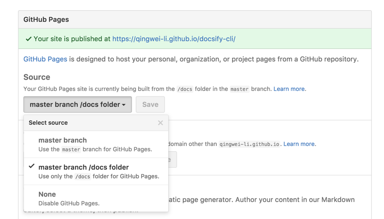

docsify
一个神奇的文档网站生成工具
docsify 是一个动态生成文档网站的工具。不同于 GitBook、Hexo 的地方是它不会生成将 .md 转成 .html 文件，所有转换工作都是在运行时进行
快速开始
全局安装 docsify
npm i docsify-cli -g
如果想在项目的 ./docs 目录里写文档，直接通过 init 初始化项目
docsify init ./docs
本地启动开发
docsify serve docs
文件目录
+-- web
| +-- _navbar.md // 二级导航
| +-- README.md //二级首页
| +-- javscsript.md // javscsript文档
| +-- html.md // html文档
| +-- css.md // css 文档
+-- _coverpage.md //封面
+-- _navbar.md // 导航
+-- _sidebar.md //侧边栏
+-- index.html //入口模版文件
+-- index.css //入口模版样式
+-- README.md //默认首页
配置项
window.$docsify = {
el: '#app'
};
文档助手
docsify 扩展了一些 Markdown 语法，可以让文档更易读。
强调内容
适合显示重要的提示信息，语法为 !> 内容。
!> 一段重要的内容，可以和其他 **Markdown** 语法混用。
!> 一段重要的内容，可以和其他 Markdown 语法混用。
普通提示
普通的提示信息，比如写 TODO 或者参考内容等。
?> _TODO_ 完善示例
?> TODO 完善示例
忽略编译链接
有时候我们会把其他一些相对路径放到链接上，你必须告诉 docsify 你不需要编译这个链接。 例如：
[link](/demo/)
它将被编译为 <a href="/#/demo/">link</a> 并将加载 /demo/README.md. 可能你想跳转到 /demo/index.html。
现在你可以做到这一点
[link](/demo/ ':ignore')
即将会得到 <a href="/demo/">link</a> html 代码。不要担心，你仍然可以为链接设置标题。
[link](/demo/ ':ignore title')
<a href="/demo/" title="title">link</a>
设置链接的 target 属性
[link](/demo ':target=_blank')
[link](/demo2 ':target=_self')
Github 任务列表
- [ ] foo
- bar
- [x] baz
- [] bam <~ not working
- [ ] bim
- [ ] lim
- [ ] foo
- bar
- [x] baz
- [] bam <~ not working
- [ ] bim
- [ ] lim
图片缩放


 c
c
设置标题的 id 属性
### 你好，世界！ :id=hello-world
插件
- 全文搜索 - Search
- 谷歌统计 - Google Analytics
- 在 Github 上编辑
- 复制到剪贴板
- Gitalk：一个现代化的，基于 Preact 和 Github Issue 的评论系统
- Pagination ：docsify 的分页导航插件
部署
和 GitBook 生成的文档一样，我们可以直接把文档网站部署到 GitHub Pages 或者 VPS 上。
GitHub Pages
GitHub Pages 支持从三个地方读取文件
docs/目录- master 分支
- gh-pages 分支
我们推荐直接将文档放在 docs/ 目录下，在设置页面开启 GitHub Pages 功能并选择 master branch /docs folder 选项。

!> 可以将文档放在根目录下，然后选择 master 分支 作为文档目录。